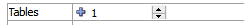
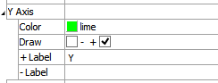
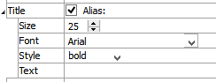
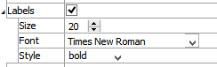

数据表图表
说明
一个或多个数据表的二维图表。
属性
数据表

指定要在绘图项中包含哪些数据表。
X 轴（以及 Y 轴和 Z 轴）

提供对绘图项中 \(x\) 轴部分的颜色、范围和标签的控制（\(y\) 轴和 \(z\) 轴的控制项相同）。
颜色：指定坐标轴的颜色。
绘制：指定渲染坐标轴正向臂、负向臂、两者还是均不渲染。
+ 标签：指定应用于坐标轴正向臂的标签文本。
- 标签：指定应用于坐标轴负向臂的标签文本。
Y 轴

提供对绘图项中 y 轴部分的颜色、范围和标签设置的控制。
标题

控制绘图项的标题。
标题：在图表顶部显示图表标题（勾选时）。在“别名：”字段中输入文本来设置图表标题。此属性还包含以下内容。
大小：设置标题中文字的大小。
字体：设置文本所用的字体面。
样式：设置文本样式（选项为常规、粗体、斜体、粗斜体）。
标签

控制该项上标签的外观。
刻度标记

控制坐标轴标记的外观。
图表

设置图表的显示选项。
图表：这是一个容器。
边框：包含图表边框（勾选时）。
线：设置边框线宽和颜色。网格：在主刻度处包含图表网格（勾选时），并设置网格线的颜色、线样式和宽度。
位置：分别指定该项左下角的下边距和左边距位置，以可用渲染区域的百分比表示。
若这些值的设置使得在当前 size 设置下该项超出可用渲染区域，则大小将自动向下调整以适应该区域。
大小：分别指定该项的 \(x\) 和 \(y\) 大小，以可用渲染区域的百分比表示。另见 position 属性。
透明度

设置绘图项的透明度。此设置不适用于二维模型对象。
透明度：为项目应用透明度（勾选时）。开启时，透明度设为默认值 70，并处于“锁定”状态。锁定时，可用的透明度范围被限制在 70（最低，略有透明）到 100（最高，完全不可见）。要访问完整的透明度取值范围（0-100），请按下锁形图标以“解锁”透明度范围；图标会随之改变（
）。
使用帮助按钮可获取有关此特定属性的帮助。
注意
应当提醒用户：低于 70 的值往往“更不透明”得难以察觉，并且可能导致深度透视看起来奇怪或不正确。
图例
设置该项在绘图图例中的显示。所有绘图项至少都具有 标题 属性。
图例：在图例中显示（勾选）有关该绘图项的所有信息。
标题：在图例中显示（勾选）该绘图项的标题。“别名：”字段可用于为该绘图项指定自定义标题。
大小：设置图例中文本的大小。
字体：设置文本所用的字体面。
样式：设置文本样式（选项为常规、粗体、斜体、粗斜体）。
颜色：设置文本颜色。
| 这些内容对您有帮助吗？… 版权与免责声明 |
FLAC3D © 2019, Itasca | 原文更新于 2020 年 10 月 8 日 |